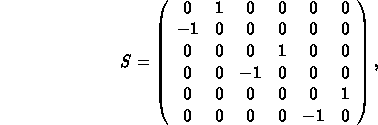

XN = xn = Re(E1T S Z), [sqrt(m)].
PXN = xn = Im(E1T S Z), [sqrt(m)].
WX = sqrt(xn2 + pxn2), [m].
PHIX = - atan(pxn / xn) / 2 pi [1].
YN = xn = Re(E2T S Z), [sqrt(m)].
PYN = xn = Im(E2T S Z), [sqrt(m)].
WY = sqrt(yn2 + pyn2), [m].
PHIY = - atan(pyn / yn) / 2 pi [1].
TN = xn = Re(E3T S Z), [sqrt(m)].
PTN = xn = Im(E3T S Z), [sqrt(m)].
WT = sqrt(tn2 + ptn2), [m].
PHIT = + atan(ptn / tn) / 2 pi [1].
Z = ( x, px, y, py, t, pt)T.
the matrix S is the ``symplectic unit matrix''

and the vectors Ei are the three complex eigenvectors.
ALFX = alphax = - 1/2 * (del betax / del s).
MUX = mux = integral (ds / betax).
DX = Dx = (del x / del PT).
DPX = Dpx = (del px / del PT) / ps.
ALFY = alphay = - 1/2 * (del betay / del s).
MUY = muy = integral (ds / betay).
DY = Dy = (del y / del PT).
DPY = Dpy = (del py / del PT) / ps.
Please note that this option is needed for a proper calculation of the chromaticities in the presence of coupling!
WX = Wx = sqrt(ax2 + bx2),
ax = (del betax / del PT) / betax,
bx = (del alphax / del PT) - (alphax / betax) * (del betax / del PT).
PHIX = Phix = atan(ax / bx).
DMUX = (del mux / del PT).
DDX = 1/2 * (del2x / del PT2).
DDPX = 1/2 * (del2px / del PT2) / ps.
WY = Wy = sqrt(ay2 + by2),
ay = (del betay / del PT) / betay,
by = (del alphay / del PT) - (alphay / betay) * (del betay / del PT).
PHIY = Phiy = atan(ay / by).
DMUY = (del muy / del PT).
DDY = 1/2 * (del2y / del PT2).
DDPY = 1/2 * (del2py / del PT2) / ps.
DQ1 = dq1 = (del Q1 / del PT).
DQ2 = dq2 = (del Q2 / del PT).
DELTAP = delta(E) / ps c.